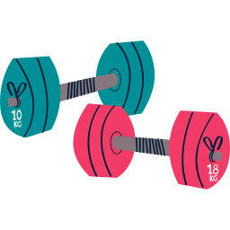

Going to the gym 
One thing that has become a daily activity is going to the gym. I personally love being there, pushing myself, learning new things, and achieving long time strength goals.
Location: Crunch Fitness Lasalle
Coding
One thing I never expected, was my new found love for coding. I love the trial and error moments, I love learning new syntax and overall just coding things im passionate about. I wish I could dedicate more time to coding, but due to my second year classes taking a huge hit on my free time, I find myself scavenging for free time often to code. Usually when I code I like to thing big, then simply my problems, alot of times my creativty out works my expertise.
Location: At home
Being with my family
Something I never take for granted is having a family. I love my family, and even if they annoy me I love spending time with them. There is something so sweet about knowing you have people who truly love you around you at all times. Its extremely comforting to me.
Location: At home